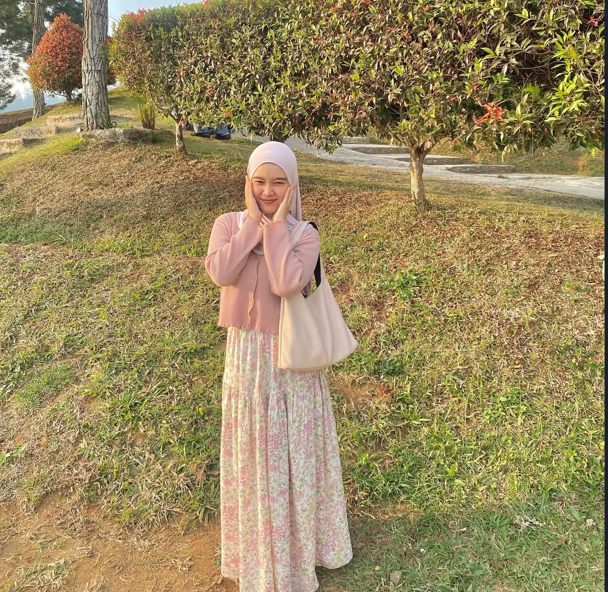

✦
PREVIOUS EDUCATION
SMK BOASH 1
Desain Komunikasi Visual
Building a creative foundationWelcome to my creative universe
Halo, saya Dwi Puji Agustin, mahasiswa Teknologi Rekayasa Multimedia di Universitas Boash. Saya tertarik pada desain grafis, editing video, fotografi, dan teknologi serta senang mengeksplorasi ide kreatif menjadi karya digital.

Your Portrait
Let your creativity shineCHAPTER I · ABOUT ME
Mengenal minat, pendidikan, dan perjalanan kreatif saya.
Halo! Nama saya Dwi Puji Agustin. Saya merupakan mahasiswa Teknologi Rekayasa Multimedia di Universitas Boash. Saya memiliki ketertarikan pada dunia multimedia, desain grafis, editing video, fotografi, dan teknologi.
Bagi saya, setiap ide memiliki potensi untuk dikembangkan menjadi karya yang bermakna. Saya terus belajar, bereksperimen, dan mengembangkan kemampuan untuk menciptakan pengalaman digital yang menarik dan bermanfaat.
CHAPTER II · MY JOURNEY
Perjalanan pendidikan yang membentuk pengetahuan dan kreativitas saya.
Desain Komunikasi Visual
Building a creative foundationTeknologi Rekayasa Multimedia
Learning, creating, and growingCHAPTER III · MY CREATIVE TOOLS
Bidang yang saya minati dan terus kembangkan.
Mengeksplorasi visual, warna, dan tipografi untuk menyampaikan pesan secara menarik.
VISUAL STORYTELLINGMengolah video, transisi, dan audio menjadi konten visual yang komunikatif.
MOTION & STORYMempelajari desain antarmuka yang menarik, terstruktur, dan mudah digunakan.
DIGITAL EXPERIENCEMengembangkan ide konten dan komunikasi digital untuk membangun interaksi dengan audiens.
CONTENT & STRATEGYMengabadikan momen dan mengeksplorasi komposisi melalui sudut pandang visual.
CAPTURE THE MOMENTMempelajari HTML, CSS, dan JavaScript untuk membangun pengalaman web interaktif.
DESIGN MEETS CODECHAPTER IV · MY STUDY LIFE
Jadwal perkuliahan Teknologi Rekayasa Multimedia.
| Hari | Waktu | Mata Kuliah | Dosen Pengajar |
|---|---|---|---|
| Jumat | 17.00–19.00 | Probabilitas dan Statistika | Joy Lawla Rizky, A.Md.T, S.Kom., M.Kom. |
| Jumat | 19.00–21.00 | Kepemimpinan dan Kewirausahaan | Dr. Jumadi, SE. |
| Sabtu | 08.00–10.00 | Visualisasi dan Animasi 3D | Hersanto Fajri, S.Ds., M.MD. |
| Sabtu | 10.00–12.00 | Audio Visual | Hersanto Fajri, S.Ds., M.MD. |
| Sabtu | 13.00–15.00 | Grafika Komputer dan Pengolahan Citra | Marastika Aji Bawono, S.Kom., M.Kom., MM. |
| Sabtu | 15.00–17.00 | Pemrograman Berorientasi Objek | Joy Lawla Rizky |
✧ Jadwal ditampilkan sebagai informasi akademik. Silakan sesuaikan jika terdapat perubahan dari kampus.
CHAPTER V · LET'S CONNECT
Terbuka untuk bertukar ide, berkolaborasi, dan menjelajahi peluang kreatif bersama.
HAVE A CREATIVE PROJECT IN MIND?
Hubungi saya melalui email atau kunjungi Instagram.